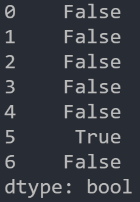

本文最后更新于：2 天前
本文从数据操作的导向角度总结了Pandas的一些常见用法，提供场景的同时也提供了部分实例。主要是想给自己做一个参考，以便忘记后查询。
本文将会持续更新。
数据结构
Series对象：包含索引的数组
Series是由索引和数组两部分构成的
- 索引（这里的索引不仅限于数值型、还支持字符串）
- Pandas实现：RangeIndex对象（数值型）、Index（非数值型，如字符串）、DatetimeIndex（时间型）
- 访问索引：Series.index
- 注：索引是有序的
- 数组
- 访问数组：Series.values
常用属性
- index：返回Series对象的索引
- values：返回Series对象的数组对象
- name：返回Series对象的名字
- 可以使用Series.rename方法重命名
常用操作及对应方法
-
创建Series
- 实例化方法：pd.Series(data=None, index=None)
- 参数
- data（有多种格式）
- ndarray
- 字典：d={‘b’=1, ‘a’=0, ‘c’=2}
- 注：Python≥3.6，Pandas≥0.23时，索引将按dict的插入顺序排序。
- 标量值：比如说一个数5
- 注：此时必须提供索引，否则确定数组部分长度。
- index
- 默认创建一个有序列表作为索引[0, 1, …, len(data)-1]，也可以传入字符串列表
- 注：
- 如果传入了索引，那么会按照索引的顺序排列数组数据。
- 索引值可以不唯一！如索引列表可以写成[‘a’,‘b’,‘c’,‘d’,‘d’]
- data（有多种格式）
-
索引和切片（Series具备和ndarray类似的索引方式）
- 索引
- 利用索引的下标值：s[1]
- 利用索引名：s[‘a’]
- 花式索引：
- s[[‘b’,‘c’,‘a’]]
- s[[2,1,3]]
- 布尔索引：
- s[s<2]
- student[(student[‘Sex’]==‘F’) & (student[‘Age’]>12)] # 查询所有大于12岁的女生信息
- 注：多条件的布尔索引中，条件之间用
&或|连接起来。
- 布尔索引+花式索引
- student[(student[‘Sex’]==‘F’) & (student[‘Age’]>12)][[‘Name’,‘Height’,‘Weight’]] # 查询所有大于12岁女生的姓名、身高和体重
- 用loc和iloc进行类似numpy数组的’[ , ]'索引或切片（Dataframe部分有详细介绍）
- 带有重复标签的轴索引（pandas不强制索引唯一）：此时会根据索引是否重复返回Series或标量值
- 切片
- 利用索引的下标值：s[0:1] # 不包含索引值为1的行
- 利用索引名：s[‘a’:‘b’] # 包含索引名’b’的行
- 切片部分的值可以修改：s[‘a’,‘b’] = 5
- 注：利用索引名进行分片，边界上行数据也是包含的！！而利用索引下标值进行分片，不包含右边界！！
- 索引
-
获取Series对象的唯一值数组
- 方法：Seires.unique()
- 返回值：array
-
返回数值数组中最大/小元素对应的索引值
- 方法：Series.argmax或Series.argmmin
- 返回：最大元素的整数下标值
-
返回数值数组中最大/小元素对应的索引名
- 方法：Seires.idxmax或Series.idxmin # Dataframe有同名方法和详解
-
统计Series中各值出现的频次
- 方法：Seires.value_counts()
- 返回值：Series。索引部分是可能出现的所有值，数组是各值出现的频次。
-
获取Series中是否出现指定元素的一个bool型数组（之后可用于布尔索引或其他场景）
- 方法：Seirse.isin(values)
- 参数
- values（可以是以下之一）
- 数值序列
- 集合（元素为数值或字符串都可）
- 字符串序列
- values（可以是以下之一）
- 返回值：Seires。判断原Series元素是否出现在values中的一个bool型Series
-
统计一个列标签下各数值出现的频次
- 方法：Series.value_counts()
-
快速返回Series数据的统计信息
- 方法：Series.describe() #详见Dataframe中同名方法
-
获取Series中数据在Index中对应的索引 的数组
-
方法：Index.get_indexer(Series)
-
实例：获取s1中的数据在索引index中对应索引
-
s1 = pd.Series([‘c’, ‘a’, ‘b’, ‘b’, ‘c’, ‘a’])
-
s2 = pd.Series([‘c’, ‘b’, ‘a’])
-
index = pd.Index(s2)
-
index.get_indexer(s1)

-
-
注：如果Seires的数据在Index中不存在，则返回的索引是-1
-
-
获取表示成员是否出现在特定序列的布尔对象/获取成员资格
-
方法：Series.isin(values)
-
参数：
- values：set or list-like。表示要测试是否存在的值序列/集合。
-
返回值：Series。将源Series中的数据替换为是否存在于values中的布尔值的新Series对象
-
实例
-
s = Series([‘a’,‘a’,‘b’,‘c’, ‘b’, ‘a’])
-
s.isin([‘b’,‘c’])

-
-
注：
-
values参数不能是单一值
-
可以使用isin方法获取一个mask，再利用索引出特定的数据。
-
实例
-
s = Series([‘a’,‘a’,‘b’,‘c’, ‘b’, ‘a’])
-
mask = s.isin([‘b’, ‘c’])
-
s[mask]

-
-
-
-
-
重建索引，返回重建索引后的对象
- 方法：Series.reindex(index=None, **kwargs)
- 参数
- index：array-like。指定的新索引的列表。如果新索引比数据行要长，则这些多余行数据会自动填充NaN
- method：{None, ‘backfill’/‘bfill’, ‘pad’/‘ffill’, ‘nearest’}。表示填充方式。
- ‘ffill’：以前一个值进行填充
- None ：不填充（默认）
- ‘backfill’：以后一个值进行填充
- 省略若干…
类似numpy.array和dict的行为
- Seires具有类似numpy.array的行为
- 类似的切片方式
- 都具有dtype属性
- Series转numpy.array：通过Series.to_numpy方法
- Series具有类似dict的行为
- 都支持按键索引值和修改值
- 都支持通过in运算符判断某个行标签是否在Seireis索引中，如 ‘a’ in series
- 都支持通过 .get 方法获取值
Dataframe对象
Dataframe包含index（行标签）、**columns（列标签）**以及数据三部分。
常用属性
- values：返回Dataframe对象的数据（以array形式）
- dtypes：返回每列数据的数据类型
- 注：区别于Series的属性dtype！
- T：返回Dataframe对象的转置
常用操作及对应方法
- 创建Dataframe
- 实例化方法：pd.Dataframe(data=None, index=None, columns=None)
- 参数：
- data（有多种来源）
- Series为元素的字典：d = {‘one’: pd.Series([1., 2., 3.], index=[‘a’, ‘b’, ‘c’]), ‘two’: pd.Series([1., 2., 3., 4.], index=[‘a’, ‘b’, ‘c’, ‘d’])}
- 注：Dataframe可以看成是以列标签为键，Series为值的字典。
- list为元素的字典：d={“id”:[111,112,113],“name”:[“li”,“wang”,“hu”],“age”:[20,30,40]}
- 注：该方法的行索引需要另外使用index参数引入
- 嵌套字典：d={‘age’: {‘li’: 20, ‘hu’: 40, ‘wang’: 90},‘sex’: {‘li’: ‘male’, ‘hu’: ‘female’, ‘wang’: ‘male’}}
- 注：列标签为外层字典的键，行标签为内层字典的键。
- 字典列表：d：[{‘a’: 1, ‘b’: 2}, {‘a’: 5, ‘b’: 10, ‘c’: 20}]
- 注：
- 列表中每一个元素(字典)都相当于DataFrame的一行数据
- 该方法的行索引需要另外使用index参数引入
- 注：
- 外部文件
- csv格式（excel支持）
- 导入方法：pd.read_csv
- xlsx格式（excel支持）
- 导入方法：pandas.read_excel
- csv格式（excel支持）
- Series为元素的字典：d = {‘one’: pd.Series([1., 2., 3.], index=[‘a’, ‘b’, ‘c’]), ‘two’: pd.Series([1., 2., 3., 4.], index=[‘a’, ‘b’, ‘c’, ‘d’])}
- data（有多种来源）
- 索引和切片
- 索引或切片列
- 索引单列（传入单个值，即列名）：s[‘one’] # 选出名为’one’的列
- 索引多列/花式索引：s[[‘two’,‘one’]] # 按顺序选出名为’two’和’one’的两列，以Dataframe返回
- 索引或切片行
- 切片行：s[:2] # 选出前两行数据，以Dataframe返回
- 布尔索引：
- 过滤行：s[s[‘two’] < 5] # 选出名为’two’列数值小于5的所有行
- **过滤行：**s[s.two < 5] # 选出名为’two’列数值小于5的所有行 # 注：如果列名合法，可以按照属性的方式选取列
- s[s<5] # 选出所有小于5的值，其余值置为NaN
- s[s<5] = 0 # 选出所有小于5的值，并将其置零
- 用loc和iloc进行类似numpy数组的’[ , ]'索引或切片
- 用loc（轴标签）进行选取
- 选取单一行或几行：data.loc[“Ohio”]
- 选取单一值：data.loc[“Utah”,“two”]
- 选取某几行数据的某几列（若行/列数有一个为1，则返回Series，否则返回Dataframe）：data.loc[[“Utah”,“New York”], [‘three’,‘four’]]
- 用loc进行切片
- data.loc[:‘Utah’, ‘two’]
- data.loc[‘Colorado’:‘Utah’, ‘two’:‘three’]
- 用iloc（整数索引）进行选取
- 选取单一行或几行：data.iloc[1]
- 选取单一值：data.iloc[3,3] # 选取4行4列上的元素
- 选取某几行数据的某几列（若行/列数有一个为1，则返回Series，否则返回Dataframe）：data.iloc[[2,3], [0, 1]]
- 用iloc进行切片
- data.iloc[:2,:2] # 注：切片的右边界元素取不到
- data.iloc[:, :3][data.three > 5] # 先切片，再布尔索引选取特定行
- 用loc（轴标签）进行选取
- 用at和iat选取单一值
- 用at（传入行、列标签）选取单一值：data.at[‘Ohio’,‘two’]
- 用iat（传入行、列元素的整数索引值）选取单一值：data.iat[1,1]
- 带有重复标签的轴索引（pandas不强制索引唯一）：此时会根据索引是否重复返回Dataframe或Seires
- 注：
- 常见的错误索引方式
- s[1] # 传入单值时默认是索引列，必须要传入列名才行
- s[-1] # pandas不建议自后向前索引（有些情况会报错），这个Python的list不同，而应该使用loc或是iloc进行索引
- 常见的错误索引方式
- 索引或切片列
- 排序
- 按轴标签排序
- 方法：df.sort_index(axis=0,level=None,ascending=True,inplace=False,kind=‘quicksort’,na_position=‘last’,sort_remaining=True,by=None)
- 参数
- axis：0（默认，表示沿行标签名排序） or 1（沿列标签名排序）
- ascending：True（默认） or False，表示是否按升序排列
- 按值排序
- 方法：df.sort_values(by,axis=0,ascending=True,inplace=False,kind=‘quicksort’,na_position=‘last’)
- 参数
- by：行/列标签名或行/列标签名组成的列表。表示要按照列表中顺序依次排序行/列，即按某一行/列排序后，如果有相同值，再按列表中剩余的行/列排序
- 排序行时要设置axis=0
- 排序列时要设置axis=1
- by：行/列标签名或行/列标签名组成的列表。表示要按照列表中顺序依次排序行/列，即按某一行/列排序后，如果有相同值，再按列表中剩余的行/列排序
- 按轴标签排序
- 排名
- 方法：df.rank(axis=0,method=‘average’,numeric_only=None,na_option=‘keep’,ascending=True,pct=False)
- 使用方法可见juypter笔记或参考https://zhuanlan.zhihu.com/p/87593543
- 生成时间型行索引
- 函数：pd.date_range(start=None, end=None, period=None, freq=‘D’,…)
- 参数：
- start：str or datetime-like。起始时间
- end：str or datetime-like。结束时间
- periods ：integer。周期数
- freq：str or DateOffset
- 数据量较大时查看前5行数据
- 方法：df.head()
- 返回Dataframe对象的详细信息
- 方法：pd.info()
- 该函数返回的信息包括：行索引、列数、每列的信息（元素数、是否含null值、元素数据类型）、内存占用情况
- 判断布尔型Dataframe对象中各列/行元素是否含有True
- 注：结合df.isnull()方法可以得知每列/行元素是否含有缺失值
- eg1：df.isnull().any(0) # 判断各列是否含缺失值（sum中的0可以省略）
- eg2：df.isnull().any(1) # 判断各行是否含缺失值
- 注：结合df.isnull()方法可以得知每列/行元素是否含有缺失值
- 快速返回Dataframe每列数据的统计信息
- 方法：df.describe()
- 返回的统计信息取决于数值类型。
- 对于数值型数据会返回：元素数、数学期望、标准差、最小/大值、分位数。
- 对于object数据会返回：数据总数、唯一值集合包含的元素数、出现次数最多的数（top）、出现次数最多数的频度（freq）
- Dataframe转numpy.ndarray
- 方法：df.to_numpy()
- 重建索引，返回重建索引后的对象
- 方法：df.reindex(labels=None, index=None, columns=None, axis=None, method=None, copy=True, level=None, fill_value=nan, limit=None, tolerance=None )
- 参数
- labels：array-like。满足参数axis要求的要重建的行/列索引名
- index/columns：array-like。要重建的行/列索引名
- axis：int（0 or 1） or str（‘index’ or ‘columns’）。指定轴，用于表明labels是行索引还是列索引
- method： {None, ‘backfill’/‘bfill’, ‘pad’/‘ffill’, ‘nearest’}。填充缺失值的方法，类似Series.reindex
- 注：
- 一般要同时指定labels和axis参数（修改行索引时可省略axis）
- labels/axis参数不与index/columns同时出现
- 返回行/列数据中最大/小元素对应的索引名
- 方法：df.idxmax(axis=0, skipna=True) 或 df.idxmin(axis=0, skipna=True)
- 参数
- skipna：bool（默认True）。是否排除NaN。设为True时，只有整行/列为NaN时，返回才是NaN。设为False是，若行/列出现NaN，则返回NaN。
- 实例1：返回各列最大元素的下标
- df = pd.DataFrame([[1.4, np.nan], [7.1, -4.5], [np.nan, np.nan], [0.75, -1.3]], index=[‘a’, ‘b’, ‘c’, ‘d’], columns=[‘one’, ‘two’])

- 实例2：返回各行最小元素的下标
- df = pd.DataFrame([[1.4, np.nan], [7.1, -4.5], [np.nan, np.nan], [0.75, -1.3]], index=[‘a’, ‘b’, ‘c’, ‘d’], columns=[‘one’, ‘two’])

Index对象
数据读写
与读取有关的函数如下所示

这些函数的功能主要有
- 索引：将一个或多个列当做返回的DataFrame处理，以及是否从文件、用户获取列名。
- 类型推断和数据转换：包括用户定义值的转换、和自定义的缺失值标记列表等。
- 日期解析：包括组合功能，比如将分散在多个列中的日期时间信息组合成结果中的单个列。
- 迭代：支持对大文件进行逐块迭代。
- 数据规整：跳过一些行、页脚、注释或其他一些不重要的东西（比如由成千上万个逗号隔开的数值数据）。
文本文件
-
读取csv文件
-
方法：pd.read_csv(filepath_or_buffer, sep=’,’, delimiter=None, header=‘infer’, names=None, index_col=None,…)
-
参数：
- filepath_or_buffer：str, path object or file-like object。该参数也可以是一个URL（协议支持：http, ftp, s3）
- sep：str, default ‘,’。表示使用的分隔符。如果字符超过1，则被解释为正则字符串。
- delimiter：str，默认为None。表示分隔符的别名。
- header：int, list of int, default ‘infer’。表示选择文件中第几行数据作为列标签，正式数据从该行之后开始计。
- 默认情况
header='infer'相当于header=0，即用第一行数据作为列标签。 - 当
header=None时，会自动生成数字序列作为列标签。
- 默认情况
- names：array-like, optional。自定义的列标签。
- index_col：int, str, sequence of int / str, or False, default
None。表示要作为Dataframe行标签的列。 - skiprows：list-like, int or callable, optional。表示需要忽略的行数（从文件开始计算）
- nrows：int, optional。表示要读取的行数，一般用于在大文件中读取部分数据。
- na_values : scalar, str, list-like, or dict, optional。表示应该被识别为Na/NaN（缺失值）的对象，匹配成功后这些数据会被替换为NaN。当该参数为dict时，每个元素的键表示Dataframe的列，值表示被识别为NaN的数据。
- 注：默认情况下，以下内容会被认为是NaN: ‘’, ‘#N/A’, ‘#N/A N/A’, ‘#NA’, ‘-1.#IND’, ‘-1.#QNAN’, ‘-NaN’, ‘-nan’, ‘1.#IND’, ‘1.#QNAN’, ‘’, ‘N/A’, ‘NA’, ‘NULL’, ‘NaN’, ‘n/a’, ‘nan’, ‘null’
-
实例
-
实例一

-
实例二：指定Dataframe某（几）列数据作为行标签

-
实例三：层次化索引

-
实例四：标记文件中的缺失值
-
!type ex6.txt

-
pd.read_csv(‘ex6.txt’, na_values= [“world”,“foo”])

-
df = pd.read_csv(‘ex6.txt’, na_values= {‘something’:[‘one’,‘two’],‘a’:1} )

-
-
实例五：读取大文件中的部分行
-
pd.read_csv(‘ex6.csv’)

-
pd.read_csv(‘ex6.csv’, nrows=5) # 读取5行数据

-
实例六：对大文件进行分块读取后再操作，具体可见这篇文章
-
-
-
-
写入csv文件
-
方法：df.to_csv 或 Series.to_csv（主要介绍前者）
-
参数
- sep：str, 默认是’,’。指定分隔符。
- na_rep：str, 默认是’’。将NaN替换为指定值。
- columns：sequence。表示要写入的列，写入的列的顺序根据序列中元素的顺序。
- header : bool or list of str, 默认为True。表示列标签，可自定义，以替换初始列标签名。
- index : bool, 默认为True。表示行标签。
-
实例：
-
读取txt文件

-
写入csv：df.to_csv(sys.stdout, sep=’|’, header=[6,1], index=False, na_rep=np.NaN, columns=[‘message’, ‘something’])

-
-
-
读取表格文件
-
方法：pd.read_table()
-
参数：该方法和pd.read_csv方法的参数基本类似
-
实例：
-
实例一：读取分隔符不规则的表格文件（本例中，有些分隔符有一个空格以及三个空格两种，这种情况需要设置sep参数为正则表达式）
-
!type ex4.txt

-
pd.read_table(‘ex4.txt’,sep=’\s+’) # '\s+'表示匹配一个或多个空格

- 注：列名比数据行的数量少，所以read_table推断第一列应该是DataFrame的索引
-
-
-
实例二：读取需要跳过某些行的表格文件
-
!type ex5.txt

-
pd.read_table(‘ex5.txt’, sep=’\s+’, skiprows=[1,3,4])

-
-
-
Pandas还支持json、html、xml等格式的读写操作，遇到时再补充。
二进制文件
- 将Dataframe对象转为二进制文件
- 方法：df.to_pickle(path)
- 将二进制文件读取为Dataframe对象
- 方法：pd.read_csv(path)
- 注：pandas支持的二进制数据格式 # 待补充
- HDF5
- MessagePack
数据库交互
通过pandas函数从数据库读取数据的一个标准范式

数据处理
数据清洗
缺失值/空值
Q1：如何判断是否存在缺失值？
A1：isnull方法
Q2：如何处理缺失值？
A2：常用的有三大类方法，即删除法、填补法和插值法。
- 删除法：
- 当数据中的某个变量大部分值都是缺失值，可以考虑删除改变量；
- 当缺失值是随机分布的，且缺失的数量并不是很多是，也可以删除这些缺失的观测；
- 替补法：
- 对于连续型变量，如果变量的分布近似或就是正态分布的话，可以用均值替代那些缺失值；
- 如果变量是有偏的，可以使用中位数来代替那些缺失值；
- 对于离散型变量，我们一般用众数去替换那些存在缺失的观测；
- 插补法：插补法是基于蒙特卡洛模拟法，结合线性模型、广义线性模型、决策树等方法计算出来的预测值替换缺失值。
对于数值型数据，pandas使用浮点值NaN（Not a Number）来表示缺失值。表示数值型数据时，Python的None也被解释为NaN。
下面是处理缺失值的一些函数

判断Dataframe对象的元素是否为null值，返回一个bool型Dateframe对象
- 方法：df.isnull()
- 注：结合sum()方法可以统计各列/行缺失数据的个数
- eg1：df.isnull().sum(0) # 判断各列缺失数据的个数（sum中的0可以省略）
- eg2：df.isnull().sum(1) # 判断各行缺失数据的个数
删除带有缺失值的行/列
- 方法：df.dropna(axis=0,how=‘any’,thresh=None,subset=None,inplace=False)
- 参数
- axis：默认是0（删除行），可以设置为1（删除列）
- how：默认是’any’（行/列中只要包含Null值就删除），可以改为’all’（必须整行/列是Null才删除）
- thresh：non-Null数少于特定阈值thersh的行/列才会被删除（eg. 某列数据包含一个非Null值，设置thresh=1，则该列数据不会被删除）
- subset：行标签或者列标签的列表（eg. [“names”, “age”, “bron”], [2,3,0]）。
- 当为行标签的列表时，表示删除列时要考虑是否存在Null值的行。
- 当为列标签的列表时，表示删除行时要考虑是否存在Null值的列。
- inplace：True或False（默认）。表示是否立即在本数据上生效。
替补法填充缺失值
- 方法：df.fillna(value=None,method=None,axis=None,inplace=False,limit=None,…)
- 参数
- value：scalar, dict, Series, or DataFrame。指定value中的值填充到df对应的行或列中。
- method：‘backfill’, ‘bfill’, ‘pad’, ‘ffill’, None。method='ffill’表示以前面的值进行填充
- axis：0 or ‘index’, 1 or ‘columns’。选择按列填充还是按行填充
- inplace：是否立即修改
- limit：限制填充的个数
- 实例：https://www.jb51.net/article/163899.htm
重复值
-
判断是否有重复值：判断Series或Dataframe的行（可以选择特定若干列）是否重复，返回一个bool型的Series。
-
方法：Seires.duplicated或df.duplicated（主要介绍Dataframe中的使用）
-
参数
- subset：列标签名或是列标签名的列表。表示判断重复行时要考虑的列。默认是所有列。
- keep： {‘first’, ‘last’, False}, default ‘first’。
- keep='first’时，将除第一次出现的重复值标为True
- keep='last’时，将除最后一次出现的重复值标为True
- keep='first’时，将出现重复的值标为True
-
实例
-
data = pd.DataFrame({‘k1’: [‘one’, ‘two’] * 3 + [‘two’], ‘k2’: [1, 1, 2, 3, 3, 4, 4], ‘k3’:list(range(6))+[5]})

-
data.duplicated(subset=‘k3’, keep=‘last’)

-
-
-
删除具有重复值的行
- 方法：Series.drop_duplicates或df.drop_duplicates（主要介绍Dataframe中的使用）
- 参数：
- subset：功能同df.duplicated函数同名参数
- keep：功能同df.duplicated函数同名参数
- inplace：bool。是否立即生效
- ignore_index：bool, default False。如果是True，结果的行标签/索引将重命名为0，1，…，n-1；否则，行标签/索引将保留原来的
删除
删除指定行索引/列索引的数据
- 方法：df.drop(label=None,axis=0,index=None,columns=None,…)
- 参数
- label：list or list-like。行/列标签名，一般和axis配合使用
- axis：0（默认） or 1。 0表示label是行标签名，1表示label是列标签名
- index：list or list-like。行标签名，单独使用
- columns：list or list-like。列标签名，单独使用
- inplace：True 或 False（默认）。表示是否立即生效
- 实例
- 实例1：删除满足条件的行
- student.drop(student[student[‘Age’]>14].index, axis=0) # 删除大于14岁的所有学生数据
- 实例1：删除满足条件的行
替换
-
方法：Series.replace()或df.replace(to_replace=None,
value=None,
inplace=False,
limit=None,
regex=False,
method=‘pad’,) -
实例
-
s = pd.Series([0, 1, 2, 3, 4]) # 定义Seires df = pd.DataFrame({'A': [0, 1, 2, 3, 4], # 定义Dataframe ... 'B': [5, 6, 7, 8, 9], ... 'C': ['a', 'b', 'c', 'd', 'e']}) df.replace(0, 5) # 替换单个元素：将0替换成5 df.replace([0, 1, 2, 3], 4) # 替换元素的列表：将列表中的元素替换成4 s.replace([1, 2], method='bfill') # 控制填充方式：将元素1和2替换成它们距离最近的下一个元素 df.replace({'A': 0, 'B': 5}, 100) # 字典形式选中待替换的元素：替换"A"列的元素0和"B"列的元素5为100 df.replace({'A': {0: 100, 4: 400}}) # 替换'A'列的元素0为100，替换'A'列的元素4为400 s.replace(1, None) # 等价于s.replace(to_replace=1, value=None, method='pad') s.replace({1:None}) # 把元素1替换成None df.replace(regex=[r'^ba.$', 'foo'], value='new') # 支持正则表达式，使用很灵活，可见函数的示例 <!--0-->
-
-
实例2：统计各字符串中字符
e的个数s.str.count('e') ################### 0 1 1 2 dtype: int64
时间类型向量化
类似字符串，Pandas 也支持对时间类型的向量化操作。
时间类型列可用 dt 属性调用相应接口。
返回数据类型为datetime的Series的天数
-
方法：s.dt.day
-
实例
sr = pd.Series(pd.date_range('2020-05-05', '2020-05-08')) sr.dt.day ####################### 0 5 1 6 2 7 3 8 dtype: int64
数据转换
replace 一般仅能用于简单的替换操作，所以 pandas 还提供了更为强大的数据转换方法——map、apply、applymap。
Series.map(arg, na_action=None)
-
功能：对给定序列中的每个值执行相同的映射操作，不同的是 series 中的 map 接口的映射方式既可以是一个函数，也可以是一个字典
-
参数
- arg：一般是函数或字典。对应某一特定映射。
- na_action：{None, ‘ignore’}, default None。当Series中包含NaN值时，na_acrtion='ignore’表示忽略对于NaN值的映射。
-
实例
-
实例1：字典映射
s = pd.Series(['cat', 'dog', np.nan, 'rabbit']) s.map({'cat':'chicken', 'dog':'pig'}) # 对于没有指定映射的元素，会默认映射为NaN ########################### 0 chicken 1 pig 2 NaN 3 NaN dtype: object -
实例2：函数映射
s.map('I am a {}'.format, na_action='ignore') ##################################### 0 I am a cat 1 I am a dog 2 NaN 3 I am a rabbit dtype: object
-
Series.apply
df.apply(func, axis=0, raw=False, result_type=None, args=(), **kwds, ) # Dataframe 列/行级的映射
-
参数
- func：pandas内置函数或者自定义函数、lambda函数等。表示要应用到行或列上的函数。
- axis：{0 or ‘index’, 1 or ‘columns’}, default 0。要应用到各列（axis=0）还是各行（axis=1）
-
实例
-
实例1：计算Dataframe各列元素最大值与最小值之差，返回Series
-
frame = pd.DataFrame(np.random.randn(4, 3), columns=list(‘bde’), index=[‘Utah’, ‘Ohio’, ‘Texas’, ‘Oregon’])
-
f = lambda x: x.max() - x.min()
-
frame.apply(func=f)

-
-
实例2：计算Dataframe各行元素最小值和最大值，返回Dataframe
-
frame = pd.DataFrame(np.random.randn(4, 3), columns=list(‘bde’), index=[‘Utah’, ‘Ohio’, ‘Texas’, ‘Oregon’])
-
f = lambda x: pd.Series([x.min(), x.max()], index=[‘min’,‘max’])
-
frame.apply(func=f, axis=1)

-
-
实例3：统计Dataframe各列不同值（各属性值）的频次
-
data = pd.DataFrame({‘Qu1’: [1, 3, 4, 3, 4], ‘Qu2’: [2, 3, 1, 2, 3], ‘Qu3’: [1, 5, 2, 4, 4]})
-
data.apply(pd.value_counts).fillna(0)

-
-
df.applymap(func) # Dataframe 元素级映射
-
实例
-
获取浮点值的格式化字符串
-
frame = pd.DataFrame(np.random.randn(4, 3), columns=list(‘bde’), index=[‘Utah’, ‘Ohio’, ‘Texas’, ‘Oregon’])
-
frame.applymap(func=lambda x: ‘%.2f’ % x)

-
-
合并与拼接
Pandas 支持对 Dataframe 进行合并与拼接，这对应与 SQL 的 union 和 join。
主要有以下四个函数实现
- 合并
- merge，完全类似于 SQL 中的 join 语法，仅支持横向合并（把列作为键进行合并），通过设置连接字段，实现对同一记录的不同列信息连接，支持 inner、left、right 和 outer4 种连接方式，但只能实现 SQL 中的等值连接
- join，语法和功能与 merge 一致，不同的是 merge 既可以用 pandas 接口调用，也可以用 dataframe 对象接口调用，而 join 则只适用于 dataframe 对象接口
- 拼接
- concat，与 numpy 中的 concatenate 类似，但功能更为强大，可通过一个 axis 参数设置是横向或者拼接，要求非拼接轴向标签唯一（例如沿着行进行拼接时，要求每个 df 内部列名是唯一的，但两个 df 间可以重复，毕竟有相同列才有拼接的实际意义）
- append，concat 执行 axis=0 时的一个简化接口，类似列表的 append 函数一样
合并/连接
合并的基本原理
- 指定两个待合并的对象（Dataframe），分别位于左右两边。
- 指定左边对象的键，指定右边对象的键。 # 键可以是列名、行索引名
- 根据键，采用特定的方式进行合并。 # 这里的特定方式即 SQL 中的四种连接方式
merge 函数的API
pd.merge(
left,
right,
how: str = 'inner',
on=None,
left_on=None,
right_on=None,
left_index: bool = False,
right_index: bool = False,
sort: bool = False,
suffixes=('_x', '_y'),
copy: bool = True,
indicator: bool = False,
validate=None,
) -> 'DataFrame'merge 的连接方式有以下四种

实例
-
实例1（内连接）：以key为键，合并df1、df2
-
df1 = pd.DataFrame({'key': ['b', 'b', 'a', 'c', 'a', 'a', 'b'], 'data1': range(7)}) # df1中有多个重复的a、b、c df2 = pd.DataFrame({'key': ['a', 'b', 'd'], 'data2': range(3)}) # df2中只有唯一的a、b、c（这很重要，如果df2中的键也存在重复的，那么合并的结果将是笛卡尔积，后面会介绍） # 注 # 0. df1和df2具有公共的列（key） # 1. df1中的c在df2中不存在 <!--6--> -
注：由于 c 不是公共的键，因此合并后不存在
-
-
实例2（内连接）：在列名不同时，分别指定左右键，然后合并df1、df2
-
df3 = pd.DataFrame({'lkey': ['b', 'b', 'a', 'c', 'a', 'a', 'b'],'data1': range(7)}) df4 = pd.DataFrame({'rkey': ['a', 'b', 'd'], 'data2': range(3)}) <!--7-->
-
-
实例3（左连接+笛卡尔积）：合并df1、df2
-
df1 = pd.DataFrame({'key': ['b', 'b', 'a', 'c', 'a', 'b'], 'data1': range(6)}) df2 = pd.DataFrame({'key': ['a', 'b', 'a', 'b', 'd'], 'data2': range(5)}) # df2 中 key 的值不是唯一的，因此合并时会产生笛卡尔积 <!--8-->
-
-
实例4（根据多个键合并）
-
left = pd.DataFrame({'key1': ['foo', 'foo', 'bar'], 'key2': ['one', 'two', 'one'], 'lval': [1, 2, 3]}) right = pd.DataFrame({'key1': ['foo', 'foo', 'bar', 'bar'], 'key2': ['one', 'one', 'one', 'two'], 'rval': [4, 5, 6, 7]}) <!--9--> -
注：根据多个键合并时，可将多个键看成一个整体来理解。
-
-
实例5（指定重复列名的后缀）
-
# 沿用实例4的left、right pd.merge(left, right, on='key1', sort='key1') # 不定后缀时 pd.merge(left, right, on='key1', sort='key1', suffixes=['_left', '_right']) # 通过 suffixes 参数指定后缀 <!--10--> -
pd.merge(left1, right1, left_on='key', right_index=True) # 左边的键是列名，因此用 left_on 指定 # 右边的键是行索引名，因此用 right_index 指定 <!--11-->
-
-
student.drop('Age', axis=1).groupby('Sex').max() <!--12-->
实例3（多分组键+多统计量）：统计各性别中不同年龄学生的最大身高、体重以及最小身高、体重
-
# student 沿用实例1 student.drop('Name', axis=1).groupby(['Sex', 'Age']).agg([np.max, np.min]) <!--13--> -
参数
- columns：一般是列名或者列名组成的列表。表示分组键。
- values：一般是列名或者列名组成的列表。表示要聚合的对象。
- aggfunc：聚合函数，默认是取均值（mean）
-
注：使用 pivot_table 后返回的是一个Series（堆叠后的Dataframe），如果希望返回Dataframe，需要再使用 unstack 方法。
交叉表
索引对象
多索引对象
创建
访问
数据可视化
本博客所有文章除特别声明外，均采用 CC BY-SA 4.0 协议 ，转载请注明出处！